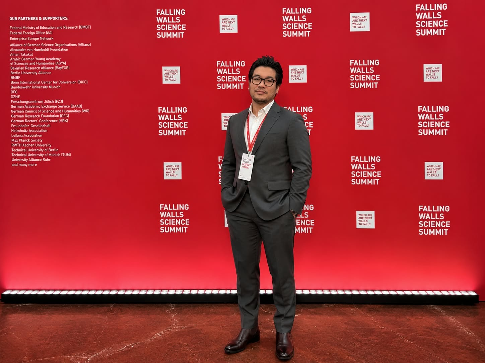

Research & projects
Research themes, selected studies, scientific figures, and intellectual contributions.
Explore research
Behavioral neuroscience · Neuropharmacology · Research development
Behavioral Neuroscience & Neuropharmacology
Leibniz Research Centre for Working Environment and Human Factors / Leibniz-Institut für Arbeitsforschung an der Technischen Universität Dortmund (IfADo)
I investigate the neurobiological and behavioral mechanisms of attention, cognition, addiction vulnerability, and neuropsychiatric-relevant phenotypes. My work integrates preclinical behavioral models, neuropharmacology, molecular neuroscience, and translational research, alongside complementary scholarship in science, technology, and innovation policy.
Explore the portfolio
Research themes, selected studies, scientific figures, and intellectual contributions.
Explore researchPeer-reviewed articles, preprints, and research outputs across neuroscience and innovation policy.
Browse publicationsEducation, appointments, mentorship, editorial responsibilities, and professional service.
View academic profileNetworking Group Aging, Department of Ergonomics, Leibniz Research Centre for Working Environment and Human Factors (IfADo), TU Dortmund, Dortmund, Germany
June 21, 2022–present
Institute for New Drug Development, College of Pharmacy, Jeonbuk National University, Jeonju, South Korea
September 2021–May 31, 2022
Uimyung Research Institute for Neuroscience, College of Pharmacy, Sahmyook University, Seoul, South Korea
September 1, 2016–August 30, 2021
College of Nursing, Colegio de Sta. Lourdes of Leyte Foundation Inc., Tabontabon, Leyte, Philippines
March 2014–August 2016
Faculty of Management and Development Studies, University of the Philippines Open University, Los Baños, Laguna, Philippines
Scheduled graduation: December 5, 2026
Thesis: Multisectoral Interactions in the Philippine Innovation System: A Qualitative Meta-Analysis Using the Quadruple Helix Framework
School of Pharmacy, Sahmyook University, Seoul, South Korea · August 20, 2021
Dissertation: The thyroid hormone-responsive protein-overexpressing model of ADHD implicates low striatal T3 levels in the inattention and memory impairment in mice
School of Pharmacy, Sahmyook University, Seoul, South Korea · August 17, 2018
Thesis: Overexpression of thyroid-hormone responsive (Thrsp) gene in the striatum leads to the development of inattentive-like phenotype in mice
Department of Nursing, School of Health Care Professions, University of San Carlos, Talamban, Cebu, Philippines · October 24, 2015
Research project: Proposed disaster preparedness guidelines for Leyte Provincial Hospital, Philippines
Colegio de Sta. Lourdes of Leyte Foundation Inc., Tabontabon, Leyte, Philippines · May 5, 2013
Adaptive Research-Innovation Systems and Environments (ARISE) Research Group, Faculty of Management and Development Studies, University of the Philippines Open University, Los Baños, Laguna, Philippines
June 21, 2022–present
Research interests include national innovation ecosystems and multisectoral research and innovation systems.
Editorial Board Member · Springer Nature
September 11, 2026–present · Journal editorial board
Review (Community) Editor
July 15, 2024–present
Review (Community) Editor
May 30, 2024–present
Review (Community) Editor
June 29, 2022–present
Peer reviewer for selected journals across Springer Nature / Nature Portfolio, Elsevier, Wiley, Taylor & Francis, SAGE Publishing, Frontiers, and MDPI. Journals listed in the CV include Nature Communications, Communications Biology, Scientific Reports, Experimental and Molecular Pathology, Pharmacological Research, Biological Psychiatry, Alzheimer's & Dementia, Addiction Biology, Journal of Psychopharmacology, Frontiers in Pharmacology, Brain Sciences, Pharmaceuticals, and NeuroSci.